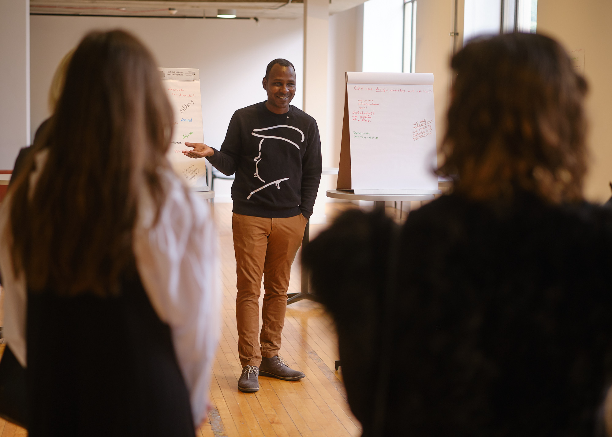

Capabilities
-
Public convenings
Conferences and gatherings that put civic leaders, technologists, and neighbors in the same room, working a shared problem instead of talking past each other.
-
Participatory & speculative design
Room-scale exercises, gallery pieces, and worldbuilding that hand a group the tools to rehearse a system, a decision, or a future before it gets built for them.
-
Civic-technology mobilization
Programs that pair design and engineering talent with public-interest work, building the civic infrastructure cities keep promising but rarely staff.
-
Workshops & facilitation
Hands-on sessions that take a tangled civic or technical question and turn it into something a group can argue about, shape, and actually decide together.
About

Ron Bronson (b. Plainfield, New Jersey) is a critical urbanist, speculative designer, and writer whose practice fuses social and financial engineering. It studies the everyday frictions of daily life to ask how we’re meant to live in a world permanently distorted by disruptive technologies and how those impacts scale downward to how people are made to live inside systems they did not design: forms, feeds, defaults, categories, queues, third-party platforms, and the disintermediation of platformisation.
With a background in web development and broad approach to human-centered design, his practice seeks to identify and name the unwritten rules of bureaucracies and daily life. Bronson’s mediums range from card decks, digital artifacts, and participatory design events.
He is the author of The Hidden Cost of Everything: Decentering the User Experience (2021). He has spoken at design and tech events around the globe, including in Oslo, Barcelona, Cape Town, Toronto, and Vancouver, and lectured at universities including Indiana University, Portland State University, George Fox University, the Massachusetts College of Art and Design, and the Art Academy of Latvia.
His speculative and participatory work includes Pensulo (2015), Death to UX (2022), A Parliament of Neighbors (2023), and Manipulation Engineering (2024). He is an Assistant Professor of Practice in Urban Technology at the University of Michigan’s Taubman College of Architecture and Urban Planning.
Selected work
-
2026
pdxfutures.org ↗
PDX Futures Bureau
Planned · Portland Design Month 2026 · Portland, OR
A planned participatory design event for 2026 Portland Design Month, built on the premise that cities are shaped by what they choose to imagine, build, fund, and support. It combines public mechanics with speculative design to ask what Portland can imagine and build together.
-
2025
digitalcorpspdx.org ↗
PDX Digital Corps
Civic-tech volunteering · Portland, OR · April through July 2025
An experiment in civic-tech volunteering that put designers, developers, and PMs onto small teams shipping real fixes for six Oregon organizations: website repairs, usability and accessibility work, and custom tools, all scoped to ship in weeks. Over 100 people took part.
-
2024
designforthepublic.com ↗
Design for the Public
Revolution Hall & the Wacom Experience Center, Portland · October 16 to 17, 2024
A two-day independent conference on public-interest design, co-hosted with Technologists for the Public Good. No sponsors and no corporate agendas, just leaders across public-interest tech, government design, and research reconnecting around the future of human-centered systems through talks, panels, crits, and workshops.
-
2023
Project ↗
A Parliament of Neighbors
Chimaera gallery popup, Lloyd Center Mall, Portland · May 13, 2023
A live participatory piece on worldbuilding, speculative governance, and what we owe our neighbors.
-
2022
Death to UX
PNCA, Portland · October 5, 2022 · Portland Design Festival
A gathering of people interested in interaction design to reckon with what the discipline of user experience has wrought on modern life, and to contemplate what the future might look like. Whiteboards of provocations lined the gallery; participants filled them in, then we discussed the responses together.
-
2021
Instagram ↗
The Hidden Cost of Everything: Decentering the User Experience
Zine · October 2021
A printed tract / zine reframing earlier writing on consequence design — a case for decentering the user experience.
-
2017
digital.gov ↗
Consequence Design
Design framework & practice
A framework for examining how technology affects real lives after deployment: how defaults, automation, and system architecture produce harms their makers rarely see, and how those harms ripple through communities and institutions. Its applied offshoot, DIRE (Design Integrity Reliability Engineering), turns it into methods for maintaining and repairing complex systems under pressure.
-
2016
Dribbble ↗
Pensulo Cards
Printed card deck
A deck of 46 cards for breaking creative block and provoking ideas, printed and distributed as physical sets.
-
2014
Aggregate
Atlantic No. 5, Louisville, KY · September 29 to 30, 2014
A two-day conference exploring social media, UX, and the future of the web.